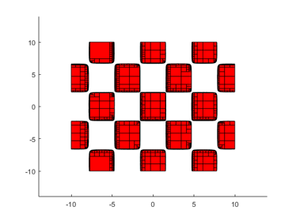

DEMOINTLAB A little demonstration of INTLAB, the Matlab toolbox for Reliable Computing
Designed and written by Siegfried M. Rump, head of the Institute for Reliable Computing, Hamburg University of Technology. For more information, see www.ti3.tuhh.de
Contents
- Welcome to INTLAB, the Matlab toolbox for Reliable Computing
- Possible overestimation by interval operations
- The product Q*X: rotation of an interval
- The product Q*X using affine arithmetic
- Limited precision calculations: The fl-toolbox
- An example of interval overestimation: complex multiplication
- A model problem for global optimization proposed by Griewank
- Find the minimum function value, kmax = 20
- Find the minimum function value, kmax = 50
- Estimation of the range of the Griewank-function over the whole domain by taking the minimum and maximum in the nodes
- Inclusion of the range by interval arithmetic
- Finding the global minimum
- Parameter set estimation
- A linear system in n=500 unknowns with random entries A_ij
- Inclusion interval vector X of solution of the interval linear system Ax=b
- How sharp is the computed inclusion?
- Try a Monte Carlo approach
- Use sign information of an approximate inverse of A.mid to obtain the true range
- Inner inclusion
- Structured linear systems
- Roots of a polynomial in the complex plane
- Calculate the range of P in the interval [-1,0.7]
- Bernstein coefficients
- Improvement of Bernstein bounds
- Bernstein coefficients for interval polynomials
- The solution complex of a linear interval system
- Convexity of the solution set of an interval linear system
- The solution set of a 3-dimensional interval linear system
- A batman like example
- Enjoy INTLAB
Welcome to INTLAB, the Matlab toolbox for Reliable Computing
Following are some examples how to use INTLAB, the Matlab toolbox for Reliable Computing. Since I like pictures, some features using the graphical capabilities of INTLAB are demonstrated. Please consult "demo intval" [direct call web('dintval.html')] to get acquainted how to define and to use intervals. See also the other demos like gradient, hessian, long, polynom, etc.
Possible overestimation by interval operations
As a first example, watch possible overestimation by interval operations by the so-called wrapping effect. Define a 2 x 2 rotation matrix Q rotating by 30 degrees and consider the two-dimensional box X with lower left vertex (1,1) and upper right vertex
format compact short infsup phi = 30*pi/180; Q = [ cos(phi) -sin(phi) ; sin(phi) cos(phi) ] X = [ infsup(1,2) ; infsup(2,4) ]
Q =
0.8660 -0.5000
0.5000 0.8660
intval X =
[ 1.0000, 2.0000]
[ 2.0000, 4.0000]
The product Q*X: rotation of an interval
Distinguish between the power set operation Q*X and the interval operation Q*X. By linearity, the power set result is an n-dimensional parallel-epiped. The interval product Q*X, however, must be an interval vector. By definition, it is the smallest interval vector containing all possible Q*x for x in X. The overestimation is caused by the fact that the supporting hyperplanes of interval vectors are parallel to the axes. The following picture shows in blue the interval result of Q*X, while the parallelogram in red is the true range of Q*x for x in X.
Yint = Q*X close all plotintval(Yint,'n'), hold on x = [1 1 2 2;2 4 2 4]; y = Q*x; index = convhull(y(1,:),y(2,:)); plot(0,0,'o') plot(x(1,index),x(2,index),'k--') plot(y(1,index),y(2,index),'r-o') axis equal hold off
intval Yint = [ -1.1340, 0.7321] [ 2.2320, 4.4642]
The product Q*X using affine arithmetic
Affine operations carry some "memory" and may produce better inclusions. The following shows both the result using ordinary interval arithmetic and using affine arithmetic. The large red box is the result by ordinary interval arithmetic, the blue parallel-epiped inside the result by affine arithmetic.
close Yaff = Q*affari(X) plotintval(Yint,'r') hold on plotaffari(Yaff) shg
affari Yaff = [ -1.1340, 0.7321] [ 2.2320, 4.4642]
It is important to note that INTLAB's affari package continues computations only with the intersection between the blue area and the rectangle.
The results can never be worse than ordinary interval arithmetic. For details see the affari demo.
Limited precision calculations: The fl-toolbox
Sometimes it is interesting to know the result of a computation using some limited precision. This is possible using the INTLAB's fl-toolbox. Consider the following residual of a linear system, first computed in working (double) precision, then using binary 22-bit arithmetic with exponent range 100:
n = 100;
A = randn(n);
b = randn(n,1);
xs = A\b;
normresdble = max(abs(A*xs-b))
flinit(22,100)
normresfl = max(abs(A*fl(xs)-b))
flinit('DisplayDouble')
normresfl
normresdble =
2.2538e-14
ans =
'Initialization of fl-format to 22 mantissa bits incl. impl. 1 and exponent range -99 .. 100 for normalized fl-numbers'
fl-type normresfl =
1.2023e-05
===> Display fl-variables as doubles
fl-type normresfl =
1.2023e-05
As expected, the accuracy decreases. An inclusion of the residual is computed as follows, for details see the fl-demo:
normres_incl = max(A*intval(xs)-b) normres_fl_incl = max(A*fl(intval(xs))-b)
intval normres_incl = 1.0e-013 * [ 0.1215, 0.5327] fl-type intval normres_fl_incl = 1.0e-003 * [ -0.0206, 0.1045]
An example of interval overestimation: complex multiplication
It is the principle of interval operations that they always produce a result which contains all possible results of operations between quantities in the input operands. Another example of overestimation is complex multiplication. The data for the following picture is taken from Markus Grimmer, Wuppertal, presented at the Dagstuhl meeting on "Numerical Software with Result Verification", January 2003. The blue circle is the (complex) interval result. Real intervals in INTLAB use inf-sup representation, while complex intervals use mid-rad representation.
close all kmax = 40; i = sqrt(-1); a=midrad(1,1); b=midrad(-1+i,1); plotintval(a*b); hold on phi = linspace(0,2*pi,kmax); [A,B] = meshgrid( mid(a)+rad(a)*exp(i*phi) , mid(b)+rad(b)*exp(i*phi) ); plot(A.*B) hold off

A model problem for global optimization proposed by Griewank
The amount of overestimation depends on many things, especially on the formulation of a function. As a rule thumb one might say that to diminish overestimation, a single variable should not occur too many times. However, there are many counterexamples to that.
Sometimes there is not much overestimation. As an example take the following well known test function for global optimization routines proposed by Griewank:
f = inline(' (x.^2+y.^2)/4000 + cos(x).*cos(y)/sqrt(2) + 1 ')
f =
Inline function:
f(x,y) = (x.^2+y.^2)/4000 + cos(x).*cos(y)/sqrt(2) + 1
Find the minimum function value, kmax = 20
The task for a global optimizer is to find the minimum function value for -60 <= x <= 60 -60 <= y <= 60 To get an impression of the function we first take a look at a plot. The following is how it really happened to me.
kmax = 20; [x,y] = meshgrid(linspace(-60,60,kmax)); surf(x,y,f(x,y))
Find the minimum function value, kmax = 50
The surface looks smooth and one might argue why should this be a serious test function for global optimization. However, if we repeat the plot with 50 meshpoints in x- and y-direction, then the function decovers its ugly behaviour.
kmax = 50; [x,y] = meshgrid(linspace(-60,60,kmax)); surf(x,y,f(x,y))
Estimation of the range of the Griewank-function over the whole domain by taking the minimum and maximum in the nodes
The first plot looks nice just because of advantageous plotting nodes. We may try to estimate the range of the function over the whole domain by taking the minimum and maximum in the nodes. This is, by construction, always an inner inclusion.
[ min(min(f(x,y))) max(max(f(x,y))) ]
ans =
0.3901 3.4414
Inclusion of the range by interval arithmetic
A true inclusion is easily obtained by interval arithmetic.
Note that the first estimate required 50*50 = 2500 function evaluation, whereas the validated inclusion requires only one interval evaluation. A closer inspection shows that the interval bounds are sharp up to two digits, so in this case there is not much overestimation. Unfortunately, this is not always typical.
X = infsup(-60,60); Y = X; f(X,Y)
intval ans = [ 0.2928, 3.5072]
Finding the global minimum
A main point of interval arithmetic and verification methods is that the computed results are mathematically correct. Using only floating-point arithmetic that is particularly difficult if the global behaviour of a function is to be estimated.
For example, finding the global minimum of the Griewank may be tried by local methods, possibly evaluating the function on a very fine grid. However, the true global minimum may slip such an approach.
A verification method computes the mathematically true global minimum, in the following of the Griewank function over the whole R^2. For more details on global optimization see the corresponding demo.
tic [mu,L] = verifyglobalmin(@Griewank,infsup(-inf,inf)*ones(2,1)) toc
intval mu =
[ 0.0000, 0.0000]
L =
[]
Elapsed time is 0.991122 seconds.
Parameter set estimation
The following shows the areas where, in the box [-10,10]^2, the 2-dimensional Griewank function admits function values in the interval X:=[0,1].
verifynlssparam(@Griewank,infsup(0,1),infsup(-10,10)*ones(2,1), ... verifynlssparamset('display','~'));
Zooming into the picture shows red and yellow areas. For the former, all function values are inside X, for the latter they may be, and for the uncoloured boxes the function values are definitely outside X.
axis([-2 -1 1 3]) shg
A linear system in n=500 unknowns with random entries A_ij
For a given linear system with data afflicted with tolerances one may want to compute the smallest box around the set of all solution for data varying within the tolerances. A common approach for that is Monte Carlo analysis.
Consider a randomly generated linear system with interval matrix A and right hand side b such that A.mid * x = b for x = ones(n,1). The following generates such a linear system in n=500 unknowns with random entries A_ij uniformly distributed within [-0.5,0.5] and each A_ij afflicted with a relative tolerance of 1e-6.
n = 500; rand('state',0)
A = rand(n)-.5; A = midrad(A,1e-6*abs(A)); b = A.mid*ones(n,1);
c = cond(A.mid)
c = 3.3720e+03
Inclusion interval vector X of solution of the interval linear system Ax=b
The condition number c~1e3 suggests that we may expect a variation of the solution of the order c*1e-6 ~ 1e-3.
The following computes an inclusion X of the solution set of the interval linear system Ax=b, that is for every M in A the true solution of Mx=b is in X. The interval box of the first two components X(1) versus X(2) is plotted.
close all tic X = verifylss(A,b); t_verifylss = toc plotintval(X(1:2),'n') hold on
t_verifylss =
0.1142
How sharp is the computed inclusion?
The size of the box is of the expected order, but is it an overestimation? Note that we know the expected size of X only because we computed the condition number of the (midpoint) matrix.
Often the sharpness of the computed inclusion can be judged by the computation of so-called inner inclusions. The following vectors Xinf and Xsup are computed such that [Xinf,Xsup] is in the inner of the best possible interval vector Xopt including the set of all solutions. The additional computing time is a marginal O(n^2).
tic
[X,Xinf,Xsup] = verifylss(A,b);
t_verifylss = toc
Xinner = infsup(Xinf,Xsup);
plotintval(Xinner(1:2),'n')
t_verifylss =
0.1044
From the small distance of the outer and inner inclusion it can be concluded that the computed outer inclusion is almost sharp.
Try a Monte Carlo approach
One may try a Monte Carlo approach. In order to obtain large variations of the solution we randomly choose only "vertex" matrices, that is matrices M such that M_ij is equal to A_ij.inf or A_ij.sup. We solve 100 such linear systems and plot the first two components of the result into the computed inclusion.
Note that this approach took of the order of 100*2n^3/3 operations. The random points suggest that the computed inclusion is quite an overestimation of the true range of the first two components. Note that we already proved that this is not true.
tic for i=1:100 a = A.mid+(rand(size(A))>.5).*rad(A); x = a\b; plot(x(1),x(2),'o'); end t_MonteCarlo_100 = toc t_verifylss
t_MonteCarlo_100 =
2.0152
t_verifylss =
0.1044
The 100 circles are so close together that they appear as one circle.
Use sign information of an approximate inverse of A.mid to obtain the true range
We may use sign information of an approximate inverse of A.mid to approximate extreme points of the true range of the solution. We do this for four linear systems, and the result is plotted into our figure by a circle 'o'. This confirms our previously computed inner inclusion.
R = inv(A.mid); for i=1:2 for s=[-1 1] a = A.mid - s*(sign(R(i,:)')*ones(1,n)).*A.rad; x = a\b; plot(x(1),x(2),'ko') end end hold off
Inner inclusion
Inner inclusions can be computed if only one entry in the matrix is afflicted with a tolerance. As an example consider
n = 1000; A = intval(randn(n)); A(241,433) = midrad(1,0.05); b = randn(n,1);
Some random entry of the input matrix is replaced by an interval, all other entries of the matrix and the right hand side are single floating-point numbers. An inner inclusion of the solution set is computed by
[x,xinf,xsup] = verifylss(A,b);
The standard Matlab output or INTLAB output of infsup(xinf,xsup) would not display the inner inclusion correctly. For an inner inclusion, the displayed lower bound xinf should be greater or equal to the stored vector xinf, and similarly for xsup. This is achieved by the following:
format short
v = 1:4;
x(v)
displayinner(xinf(v),xsup(v))
intval ans = [ 2.8606, 2.8717] [ 1.9689, 1.9721] [ 2.2452, 2.2505] [ -1.1866, -1.1829] intval y = [ 2.8607, 2.8716] [ 1.9690, 1.9720] [ 2.2453, 2.2504] [ -1.1865, -1.1830]
Note that the outer and inner inclusion almost coincide.
Structured linear systems
When solving a linear system with interval data, by default all data are assumed to vary independently within the tolerances. However, often the input data follows some structure, for example, the input matrix being restricted to persymmetric Hankel or circulant matrices.
Consider the following linear system, the matrix arising from the classic second difference operator on n points.
n = 100; e = midrad(ones(n,1),5e-5); A = full(spdiags([e -2*e e],-1:1,n,n)); xs = ones(n,1); xs(2:2:n) = -1; b = A.mid*xs; v = 1:5; A.mid(v,v)
ans =
-2 1 0 0 0
1 -2 1 0 0
0 1 -2 1 0
0 0 1 -2 1
0 0 0 1 -2
By construction, the matrix is symmetric Toeplitz. Note that we defined the matrix with tolerances, namely the off-diagonal elements of the matrix have a radius 5e-5, and the diagonal elements are afflicted with a radius of 1e-4. We defined a right hand side such that the true solution of the midpoint linear system is [1,-1,1,-1,...]'.
Our standard linear system solver computes an inclusion for input data varying independently within the tolerances.
[x,xinf,xsup] = verifylss(A,b);
format infsup
v = 47:53;
x(v)
displayinner(xinf(v),xsup(v))
intval ans = [ 0.6783, 1.3217] [ -1.3225, -0.6775] [ 0.6769, 1.3231] [ -1.3233, -0.6767] [ 0.6767, 1.3233] [ -1.3231, -0.6769] [ 0.6775, 1.3225] intval y = [ 0.8142, 1.1858] [ -1.1862, -0.8138] [ 0.8136, 1.1864] [ -1.1866, -0.8134] [ 0.8134, 1.1866] [ -1.1864, -0.8136] [ 0.8138, 1.1862]
As can be seen, the inclusion of the solution is rather wide (we display only some components, the others are similar). However, the inner inclusion decovers that this inclusion is not too far from the narrowest inclusion of the solution set. This is true for input data varying independently within the matrix intervals.
Things change when restricting the matrix to symmetric Toeplitz structure. In our example this implies that the matrix depends only on two parameters. Note, however, that it is not sufficient to solve the four extreme cases because the dependence is nonlinear. Moreover, this would not prove that all matrices within the tolerances are nonsingular.
An inclusion of the solution of the structured linear system together with an inner inclusion (and, of course, the proof that all structured matrices within the tolerances are nonsingular) is computed by the following command. As before, only some entries are displayed, the others are similar.
[y,yinf,ysup] = verifystructlss(structure(A,'symmetricToeplitz'),b);
y(v)
max([diam(x) diam(y)])
intval ans =
[ 0.9999, 1.0001]
[ -1.0001, -0.9999]
[ 0.9999, 1.0001]
[ -1.0001, -0.9999]
[ 0.9999, 1.0001]
[ -1.0001, -0.9999]
[ 0.9999, 1.0001]
ans =
0.6466 0.0001
As can be seen, taking the structure into account produces a much narrower inclusion than for data varying independently within the tolerances. Moreover, the inner inclusion shows that the outer inclusion may still be narrowed, but not too much:
[diam(y(v)) ysup(v)-yinf(v)]
ans =
1.0e-03 *
0.1338 0.0662
0.1339 0.0661
0.1340 0.0660
0.1340 0.0660
0.1340 0.0660
0.1340 0.0660
0.1339 0.0661
Roots of a polynomial in the complex plane
Consider the following polynomial of degree 20 with randomly generated coefficients uniformly distributed in [-1,1]. We plot the roots of the polynomial in the complex plane.
n = 20, rand('state',0) P = randpoly(n) r = roots(P); plot(real(r),imag(r),'o')
n =
20
polynom P[x] =
-0.5377 x^20
0.2137 x^19
-0.0280 x^18
0.7826 x^17
0.5242 x^16
-0.0871 x^15
-0.9630 x^14
0.6428 x^13
-0.1106 x^12
0.2309 x^11
0.5839 x^10
0.8436 x^ 9
0.4764 x^ 8
-0.6475 x^ 7
-0.1886 x^ 6
0.8709 x^ 5
0.8338 x^ 4
-0.1795 x^ 3
0.7873 x^ 2
-0.8842 x
-0.2943
Calculate the range of P in the interval [-1,0.7]
The roots are not too far from the unit circle, as expected.
Suppose we wish to calculate the range of P in the real interval [-1,0.7]. The easiest way is interval evaluation. We plot the polynomial and the inclusion of the range computed by (naive) interval arithmetic.
a = -1; b = 0.7;
X = infsup(a,b);
Y = P{X}
plotpoly(P,a,b)
hold on
intval Y = [ -3.8947, 4.8492]
Bernstein coefficients
Obviously, the computed inclusion Y is a true inclusion of the range, but an overestimation. We can improve that by using Bernstein coefficients.
Bernstein coefficients are computed with respect to the defining interval [0,1]. If we transform [a,b] into that interval and compute the Bernstein coefficients, then the convex hull of the latter are an inclusion of the range of the polynomial.
B = bernsteincoeff(ptrans(P,a,b,0,1));
plotbernstein(B,a,b)
hold off
Improvement of Bernstein bounds
The green line is the convex hull of the Bernstein coefficients. The upper bound is sharp, but the lower bound is still improvable. We may do so by splitting the interval into two parts, for example into [-1,-0.2] and [-.2,0.7], and transform both into [-1,1], one after the other.
plotpoly(P,a,b), hold on a = -1; b = -.2; B = bernsteincoeff(ptrans(P,a,b,0,1)); plotbernstein(B,a,b), a = -.2; b = .7; B = bernsteincoeff(ptrans(P,a,b,0,1)); plotbernstein(B,a,b), hold off
Bernstein coefficients for interval polynomials
Bernstein coefficients may be computed for interval polynomials as well. Following is an example plotted in the interval [-1,2]. The blue and red lines are the lower and upper bound of the interval polynomial, respectively, and the green lines form the Bernstein bounds.
P = polynom([infsup(1,2) infsup(-4,2) infsup(-3,1)]) a = -1; b = 2; plotpoly(P,a,b), hold on B = bernsteincoeff(ptrans(P,a,b,0,1)); plotbernstein(B,a,b) hold off
intval polynom P[x] = [ 1.0000, 2.0000] x^2 [ -4.0000, 2.0000] x [ -3.0000, 1.0000]
The solution complex of a linear interval system
The solution complex of a linear interval system is known to be convex in every orthant. Here is a simple example.
A = [infsup(2,4) infsup(-1,0);infsup(0,1) infsup(1,2)]; b = [infsup(-2,5);1]; plotlinsol(A,b)
intval ans = [ -1.0000, 3.0000] [ -1.5000, 2.0000]
Convexity of the solution set of an interval linear system
At first sight this looks like a contradiction. However, when plotting the axes, convexity in every orthant becomes clear.
plotlinsol(A,b,1)
intval ans = [ -1.0000, 3.0000] [ -1.5000, 2.0000]
The solution set of a 3-dimensional interval linear system
The solution set of a 3-dimensional linear system can also be displayed by plotlinsol. The following commands reproduce the cover page of Arnold's book.
format infsup
A = ones(3)*infsup(0,2);
A(1:4:end) = 3.5
b = ones(3,1)*infsup(-1,1)
close
plotlinsol(A,b)
intval A = [ 3.5000, 3.5000] [ 0.0000, 2.0000] [ 0.0000, 2.0000] [ 0.0000, 2.0000] [ 3.5000, 3.5000] [ 0.0000, 2.0000] [ 0.0000, 2.0000] [ 0.0000, 2.0000] [ 3.5000, 3.5000] intval b = [ -1.0000, 1.0000] [ -1.0000, 1.0000] [ -1.0000, 1.0000] intval ans = [ -1.7648, 1.7648] [ -1.7648, 1.7648] [ -1.7648, 1.7648]
In this demo the graph is produced before-hand. Executing the above commands in INTLAB shows the same graph, but by moving the cursor within the graph you may watch the solution set from different angles.
A batman like example
Some solution sets have nice shapes. Following is a batman-like example.
A = [infsup(2,4) infsup(-1,1);infsup(-1,1) infsup(2,4)]
b = [infsup(-3,3);.8],
close
plotlinsol(A,b)
title('batman')
intval A = [ 2.0000, 4.0000] [ -1.0000, 1.0000] [ -1.0000, 1.0000] [ 2.0000, 4.0000] intval b = [ -3.0000, 3.0000] [ 0.8000, 0.8001] intval ans = [ -2.2667, 2.2667] [ -0.4667, 1.5334]
Enjoy INTLAB
INTLAB was designed and written by S.M. Rump, head of the Institute for Reliable Computing, Hamburg University of Technology. Suggestions are always welcome to rump (at) tuhh.de